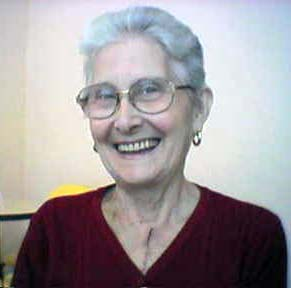
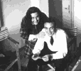
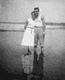
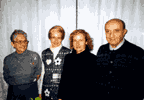
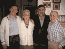
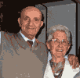
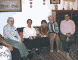

Deulma (1930)
 Deulma, poucos dias depois da operação ao coração, em 2003. |
|
No dia 3 de agosto de 1953, Deulma casou-se com Luigi Chianale, também um operario da mesma empresa.
Luigi foi Campeão Italiano de bolas francesas; agora é um instrutor deste sport para jovens.
No dia 26 de maio de 1956 Deulma teve duas gémeas, Agostina e Antonella, que tiveram dois filhos cada uma.
Em agosto de 2003 Deulma foi operada do coração, com bom exito.
Deulma é muito alegre, otimista e fala de boa vontade.
ÁLBUM:      
Para ampliar a foto clique sobre ela.
[página não recuperada no acervo]
Árvore |
Pais |
Irmãos e irmãs |
Cônjuge |
Filhos |
Antonio
Zaniratti [página não recuperada no acervo]Ernesta Bellini [página não recuperada no acervo] [página não recuperada no acervo] |
Ivano [página não recuperada no acervo] > Deulma < Giuseppe [página não recuperada no acervo] |
Luigi
Chianale |
Antonella
Agostina |
FONTES:
Ivano [página não recuperada no acervo], Deulma
22.01.2005 Página inicial